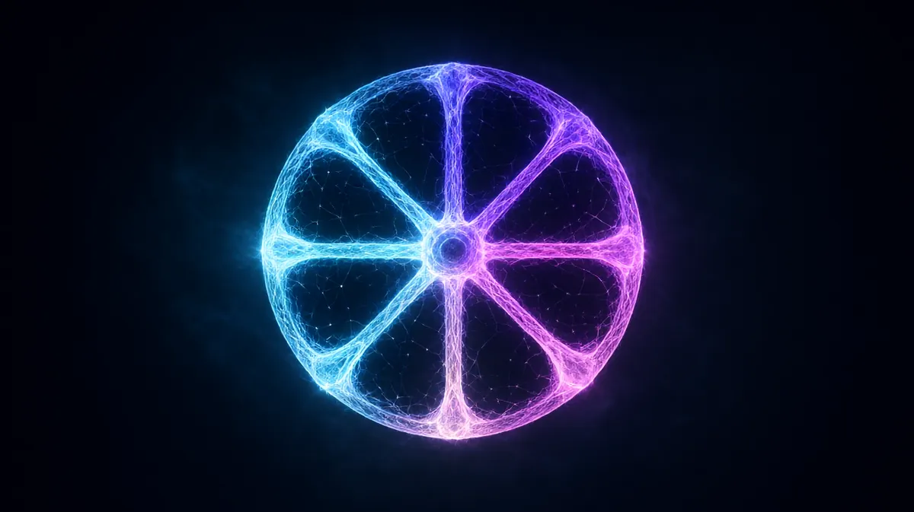

2:113 месяца · модули 1–3
2:113 месяца · модули 1–3«Колесо успеха» — Часть 1 «Внутренняя опора»
Деньги, страхи, выход из замкнутого круга. 12 тренингов.
42 000 ₽Записаться
6 месяцев, 6 сфер: деньги, страхи, внутренние ограничения, проявленность, ритм и цели. Каждая — месяц из 4 трансформационных тренингов в группе до 8 человек.

2:113 месяца · модули 1–3Деньги, страхи, выход из замкнутого круга. 12 тренингов.
2:11Флагман · 6 месяцев6 модулей, 24 живых тренинга: от денег и страхов до проявленности и масштаба.
2:113 месяца · модули 4–6Продукт и цена, ритм без стресса, от мечты к цели. 12 тренингов.
Я пришла с установкой, что я недостойна денег, деньги даются тяжело, а сейчас живу с установкой, что деньги без меня жить не могут. Феноменально, как можно поменять отношение к деньгам за столь короткое время.
Участница тренинга «Я вижу деньги»
Я изменила аватарку на более профессиональную, где выгляжу как руководитель. Выложила видео-рилс, которое раньше не выложила бы. Вышла в коммуникацию с людьми «из мира» — раньше бежала и пряталась. Составила прайс, стараясь не занижать свои цены. Начну работу клиенту над проектом — раньше сливала.
Участница тренинга «Страх успеха»
3 часа пролетели незаметно! У меня основной инсайт, что страхи — это всего лишь мысли. А ещё, что к любому проекту надо относиться, как к ребёнку: не торопить события, не пытаться сделать всё и сразу.
Участница тренинга «Короли прокрастинации»
Стоимость: · Ближайшая дата:
Напишите Марине — она пришлёт детали для оплаты.
Текст сообщения (подставится в Telegram и скопируется):
Все сессии проходят онлайн и вживую — с Мариной Степановой. Группы до 8 человек.
Бесплатный тест: 8 ситуаций → персональный разбор и следующий шаг.
Пройти тест